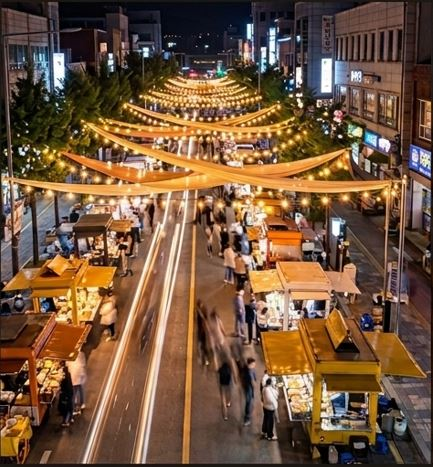
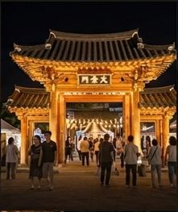
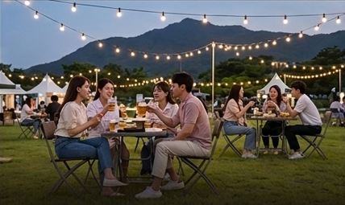
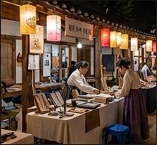
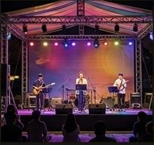

무등산 자락의 달빛 아래, 쏟아지는 빛빛과 감미로운 버스킹이 흐르는곳 시간: 4월 매주 토,일요일
About
광주의 영산, 무등산 자락 아래 펼쳐지는 달빛 야시장은 도심의 소음에서 벗어나 별빛과 미식, 그리고 낭만이 어우러지는 특별한 공간입니다. 은은한 달빛 아래 정겨운 사람들과 나누는 맛있는 음식과 감미로운 버스킹 공연은 오직 이곳에서만 느낄 수 있는 밤의 서사입니다. 시간이 멈춘 듯 평온한 무등산의 밤, 당신만의 소중한 이야기를 기록해 보세요.
Must-Visit

달빛 로드
황홀한 조명 아래 펼쳐지는 야시장의 심장부. 남도의 미식과 활기찬 에너지가 가득한 메인 스트리트입니다.

시장 중심 쉼터
천년의 시간을 품은 고풍스러운 한옥 아래서 무등산 밤바람과 함께 과거로 떠나는 낭만적인 산책을 시작해 보세요.

별빛 피크닉
무등산 실루엣을 배경으로 즐기는 야외 만찬. 소중한 사람들과 시원한 수제 맥주 한 잔에 담긴 여유를 만끽하세요.

전통 공예 체험 존
장인의 손길이 닿은 전통 공예품부터 직접 만들어보는 체험까지, 광주의 예술적 감성을 손끝으로 느껴보는 시간입니다.

달빛 버스킹 무대
밤하늘을 수놓는 감미로운 선율. 로컬 아티스트들이 전하는 음악의 울림이 달빛 아래 가득 채워집니다.
미식 천국
'홍어삼합, 무등산막걸리' 등 남도 대표 미식을 한곳에서! 입안 가득 퍼지는 맛의 축제가 야시장의 밤을 더 풍요롭게 합니다.
Travel Tips
🗓️ 매주 토, 일요일 운영
달빛이 가장 아름다운 매주 주말 저녁 6시부터 밤 11시까지 열립니다. 특히 무등산 산바람이 시원한 4월부터 10월까지가 야시장을 즐기기에 가장 완벽한 시즌입니다.
🚌 대중교통 권장
광주 시내에서 버스나 택시로 편리하게 이동 가능합니다. 축제 기간에는 주차 공간이 혼잡할 수 있으니, 인근 공영 주차장을 미리 확인하거나 대중교통을 이용해 여유롭게 방문하시는 것을 추천합니다.
🍱 남도 로컬 푸드
광주 5미(味)를 재해석한 '홍어삼합'과 무등산 수박 에이드는 이곳의 시그니처입니다. 150여 가지가 넘는 풍성한 길거리 음식을 즐기려면 가벼운 옷차림과 넉넉한 배려심은 필수입니다.
🎸 달빛 버스킹 & 포토존
중앙 광장에서 펼쳐지는 로컬 아티스트들의 버스킹은 밤 8시에 시작됩니다. 야시장 곳곳에 설치된 은하수 조명을 배경으로 인생 사진을 남겨보세요. 무등산 실루엣과 달무리가 어우러진 야경은 놓칠 수 없는 백미입니다.
달빛 가득한 추억이 당신을 기다립니다